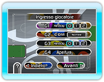
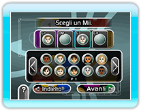

In base al tipo di gioco, possono partecipare fino a 4 giocatori. Puoi inoltre assegnare degli handicap sui falli (esclusi quelli con bianca in buca) seguendo il livello d'abilità dei giocatori.
● Assegnare i telecomandi Wii
Puoi utilizzare un singolo telecomando Wii da usare a turno per tutti i giocatori. Quando hai completato il tuo tiro, passa il telecomando Wii al giocatore successivo.

● Scegli un Mii™
I giocatori possono visualizzare un Mii a scelta durante il gioco. Si può anche giocare senza selezionare un Mii.
● La partita
In base a quello che selezioni, puoi giocare contro 1-4 giocatori in un gioco singolo oppure formare due squadre che si affronterranno in un gioco di squadra.
● Regole
Alcuni giochi ti consentono di scegliere fra diverse regole opzionali. Alcuni giochi hanno delle regole fatte apposta per "CueSports - Snooker vs Billiards".
● Tiro d'inizio
Quando si partecipa ad un torneo, l'ordine di gioco viene determinato tramite un tiro di sponda. Si colpisce il pallino da dietro alla linea d'inizio in direzione della sponda opposta. Inizierà la partita il giocatore il cui pallino si avvicina di più al lato dal quale è stato colpito.
● Condizioni di vittoria
La vittoria nel gioco viene stabilita tramite il numero di manche vinte o tramite i punti.
Puoi impostare le condizioni di vittoria prima
d'iniziare una partita.
● Replay
Puoi salvare i replay dei tiri migliori eseguiti durante una partita. Puoi rivedere i replay quante volte vuoi in modalità Replay.
Puoi salvare fino a 32 replay.